330 000 000 Berry
330 000 000 Berry| Personnage | Affiliation | Prime |
|---|---|---|
| Monkey D. Luffy | Capitaine de l'équipage au Chapeau de Paille | 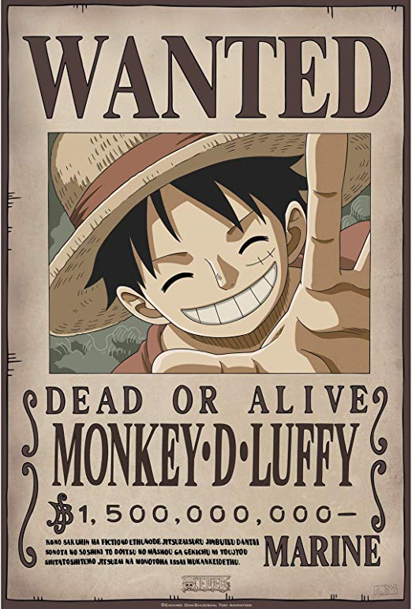 1 500 000 000 Berry |
| Roronoa Zoro | Second de l'équipage au Chapeau de Paille | 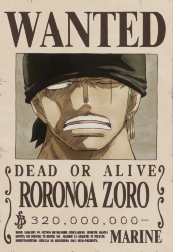 320 000 000 Berry |
| Sanji Vinsmoke | Cuisinier de l'équipage au Chapeau de Paille | 330 000 000 Berry |
| Nami | Navigatrice de l'équipage au Chapeau de Paille | 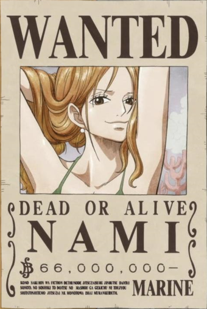 66 000 000 Berry |
| Usopp | Tireur d'élite de l'équipage au Chapeau de Paille | 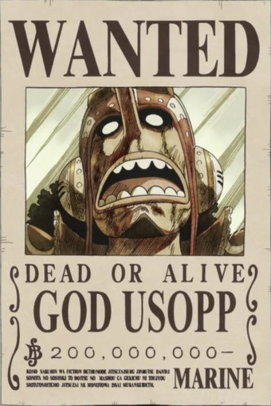 200 000 000 Berry |
| Tony-Tony Chopper | Médecin de l'équipage au Chapeau de Paille | 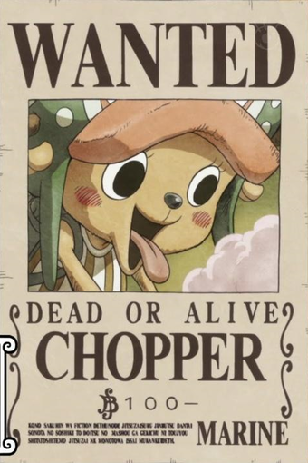 100 Berry |
| Nico Robin | Archéologue de l'équipage au Chapeau de Paille | 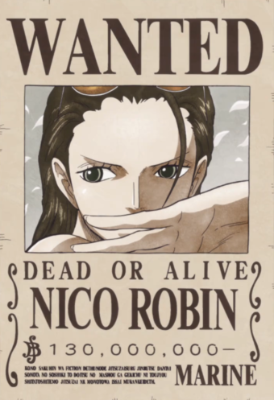 130 000 000 Berry |
| Franky | Charpentier de l'équipage au Chapeau de Paille | 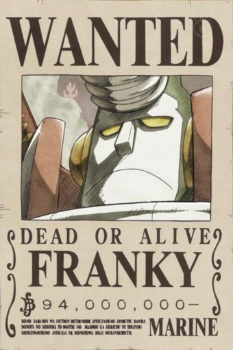 94 000 000 Berry |
| Brook | Musicien de l'équipage au Chapeau de Paille | 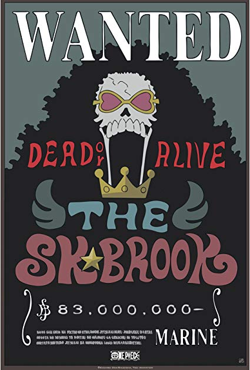 83 000 000 Berry |
| Jinbe | Timonier de l'équipage au Chapeau de Paille | 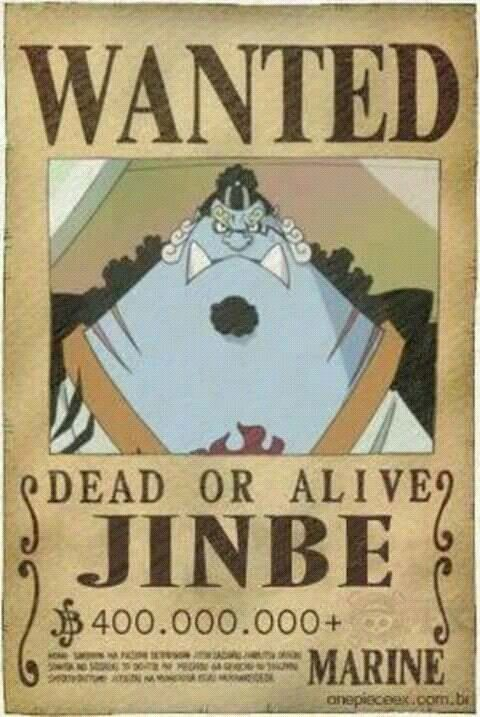 400 000 000 Berry |
| Personnage | Affiliation | Prime |
|---|---|---|
| Gol D. Roger | Capitaine de son équipage et Roi des Pirates | 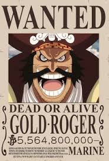 5 564 800 000 Berry |
| Personnage | Affiliation | Prime |
|---|---|---|
| Shanks le Roux | Capitaine de son équipage et Empereur des mers | 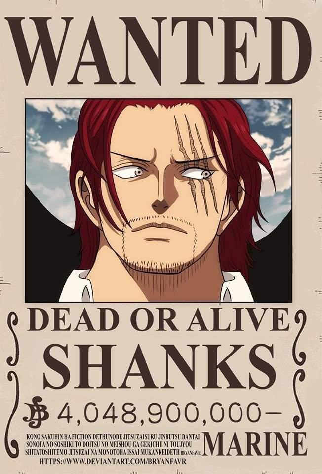 4 048 000 000 Berry |
| Big Mom | Capitaine de son équipage et Impératrice des mers | 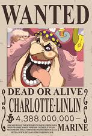 4 388 000 000 Berry |
| Kaido | Capitaine de l'équipage aux cents bêtes et Empereur des mers | 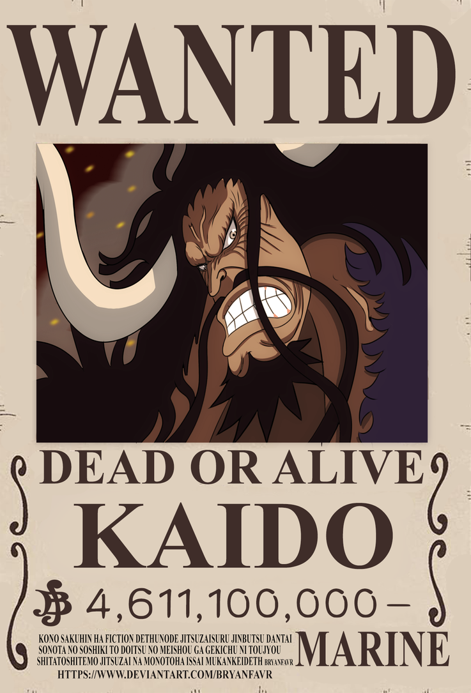 4 611 100 000 Berry |
| Barbe Noire | Capitaine de son équipage et Empereur des mers | 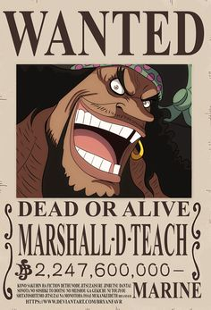 2 247 600 000 Berry |
| Barbe Blanche (Edward Newgate) | Capitaine de son équipage et Empereur des mers avant sa mort | 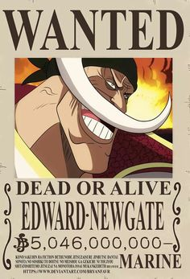 5 046 000 000 Berry |
| Personnage | Affiliation | Image |
|---|---|---|
| Ym | Dirigeants secret du Gouvernement Mondial | 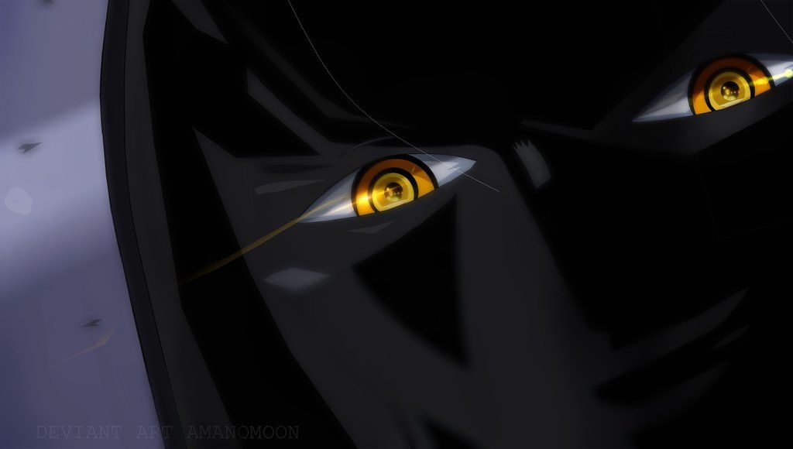Seule image disponible à ce jour |
| Conseille des cinq doyens | Leaders du Gouvernement Mondial | 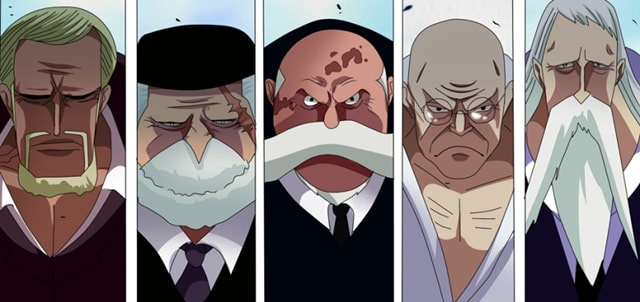 |
| Kong | Chef d'état-major des armées | 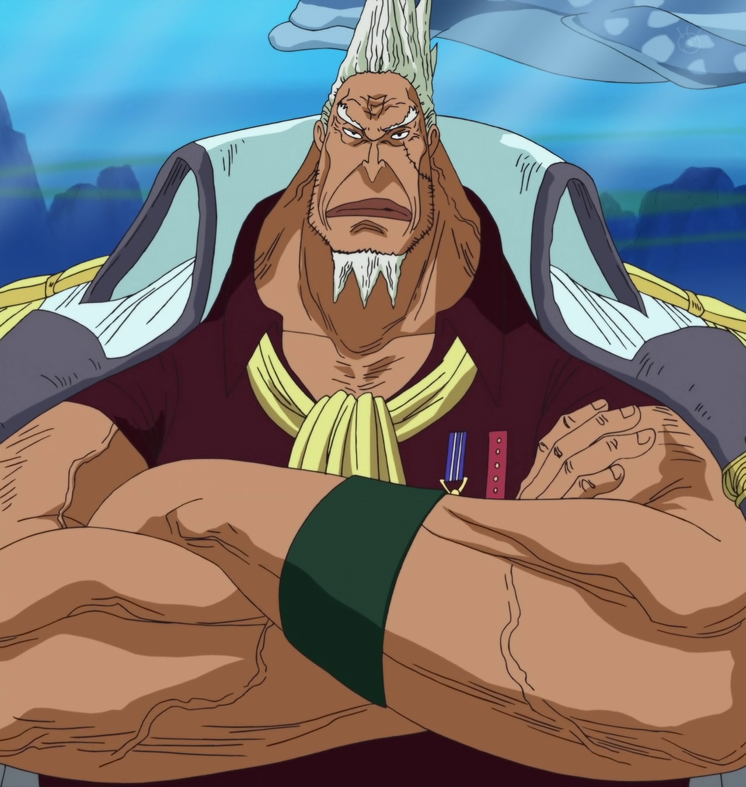 |
| Sakazuki Akainu | Amiral en chef de la marine | 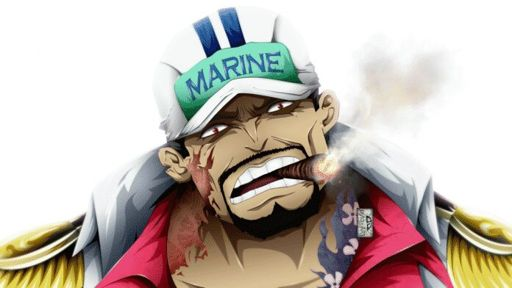 |
| Borsalino Kizaru | Amiral de la Marine | 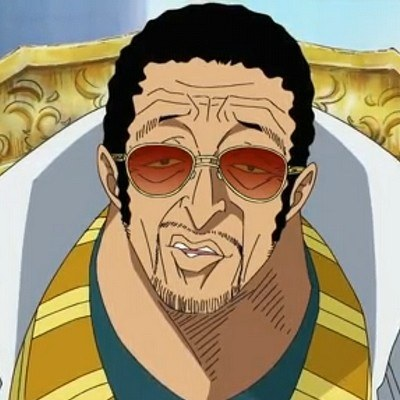 |
| Issho Fujitora | Amiral de la Marine | 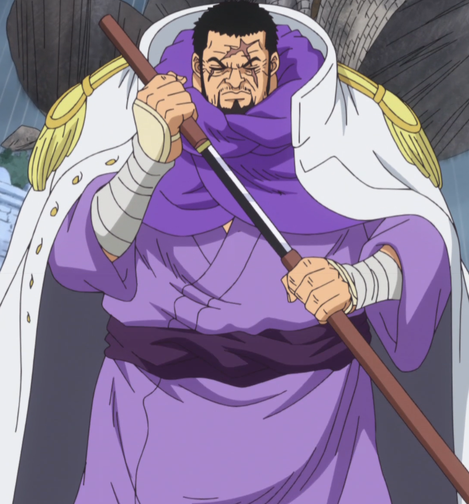 |
| Ryokugyu | Amiral de la Marine | 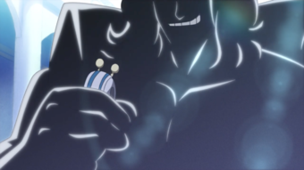Seule image disponible à ce jour |
| Monkey D. Garp | vice-amiral de la Marine | 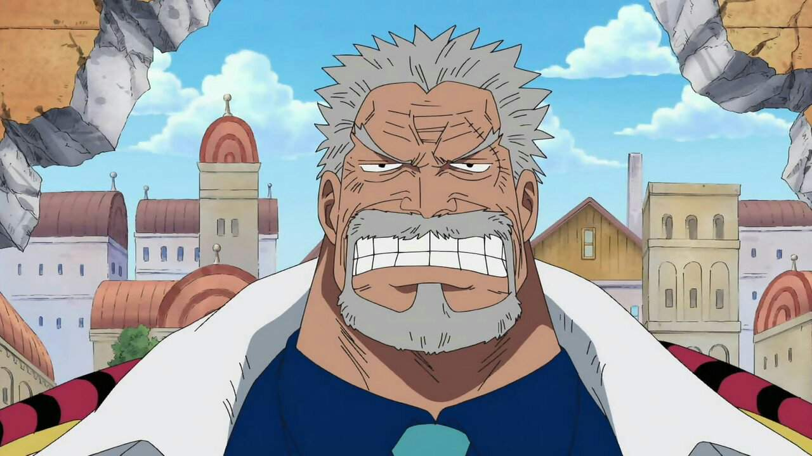 |